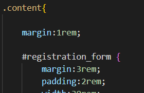
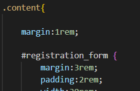

Оберіть пункт лабораторної роботи...
Тема: Каскадні талиці стилів. Ідентифікатори. Стильове оформлення текстових елементів в html-документах
Мета: придбати практичні навички роботи з селекторами, ідентифікаторами, списками, різноманітними властивостями кольору і фону, зовнішними та внутрішними відступами, плаваючими елементами, оформленням текстових елементів
Під час розробки web-додатку:
- застосувати селектори тегу і класу на свій розсуд
- застосувати ідентифікатори
- застосувати сусідні, дочірні селектори, селектор атрибута та універсальний селектор
- за допомогою каскадних таблиць стилів виконати на свій розсуд стильове оформлення текстових елементів
- показати як оформлюються:
- списки
- різноманітні властивості кольору і фону
- зовнішні та внутрішні відступи
- Програмні коди пунктів відобразити у звітному HTML-документі.


 
